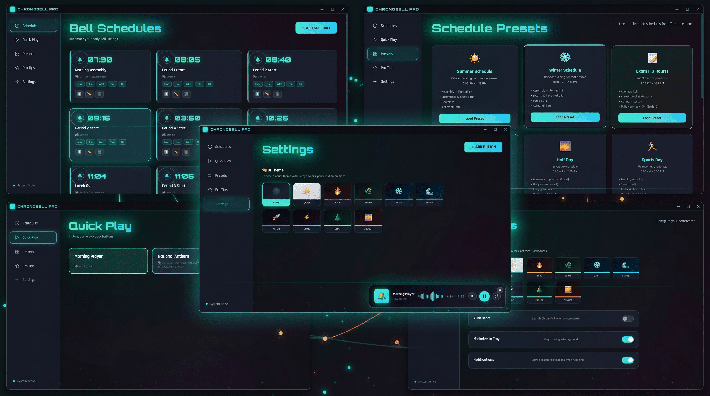
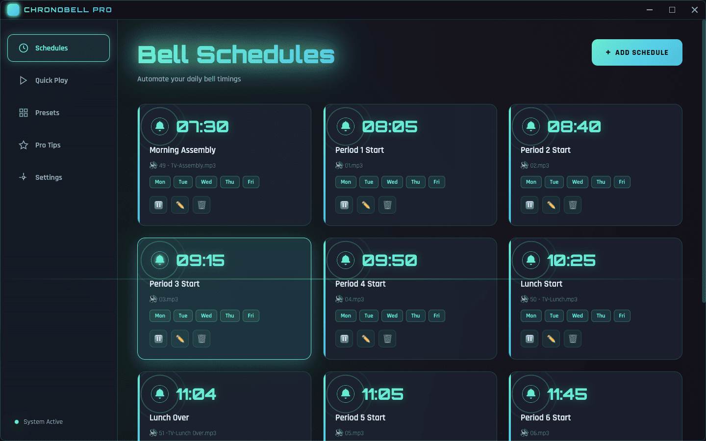
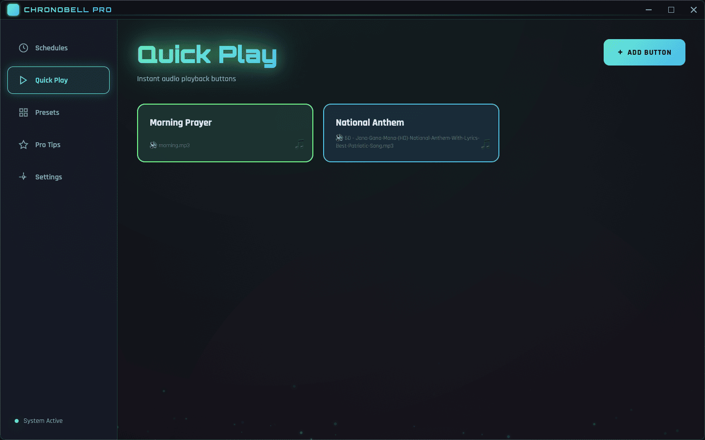
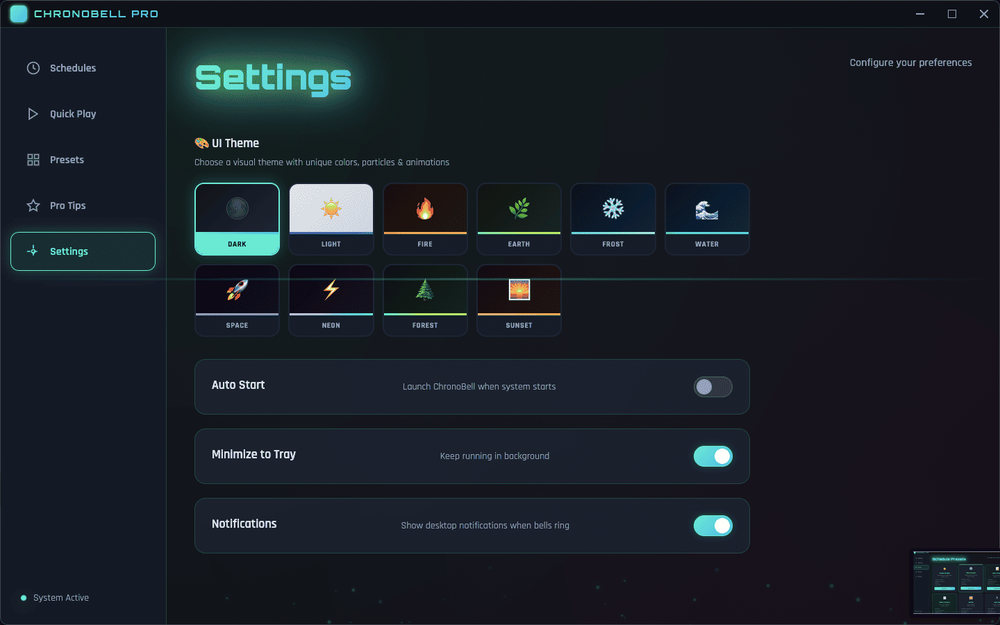
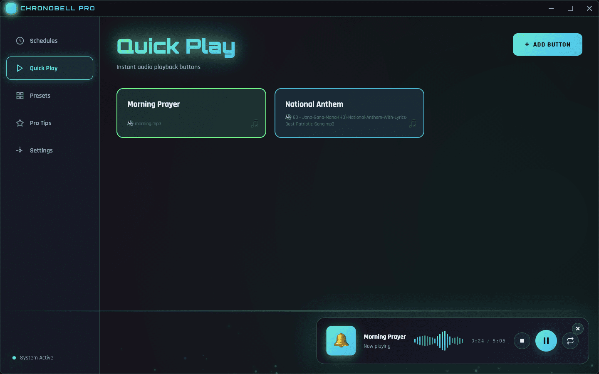

ChronoBell Pro is the professional automatic bell scheduling system built for schools, offices, and institutions. Precision timing. Beautiful interface. Works offline.

Built from the ground up for institutional bell management. Every feature is deliberate, every interaction is smooth.
Every pixel is intentional. Scroll through the gallery to explore ChronoBell Pro's interface.




Switch themes in one click. Each comes with its own particle system, color palette, and glow effects — perfectly tuned for comfort and contrast.
ChronoBell Pro plays any standard audio format. Use your own recordings, traditional bell sounds, or downloaded audio files.
Use MP3
files for best compatibility across all platforms. Keep audio files in a dedicated folder (e.g. C:\BellSounds\)
so paths don't break if you move the app.
Free to download. No subscription. No account required. Works offline from day one.
Questions, support, custom builds, or enterprise licensing — we're here to help.